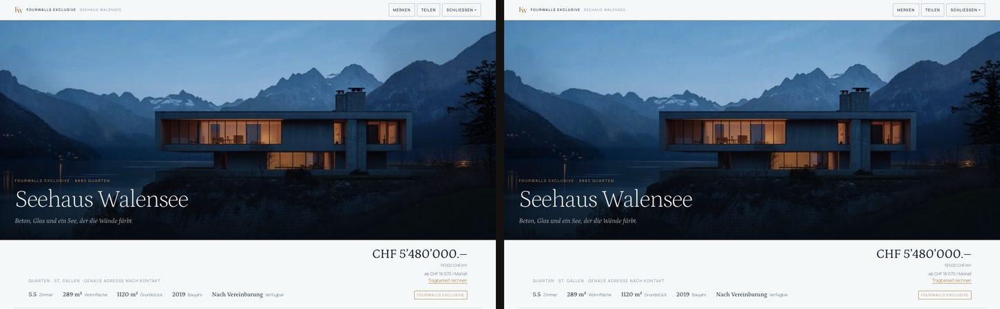
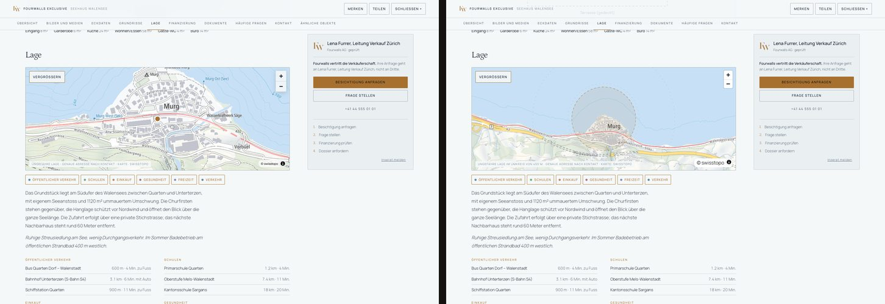
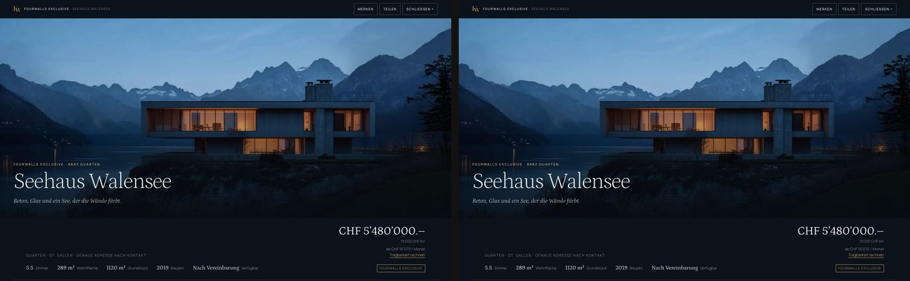

P5.2 verlangte keine Attrappe und kein Gerüst, sondern die erste durchgehende Scheibe der produktiven Anwendung: Datenbank → Serverabfrage → echte Adresse → serverseitig gerendertes UFER-Dossier → Medien → Karte → Merken → Anfrage. Sie steht, sie ist geprüft, und sie sieht aus wie der Prototyp.
Vollständig, lokal bewiesen. Die Reise aus dem Auftrag ist in dieser Reihenfolge nachvollzogen und protokolliert:
| Schritt | Beleg |
|---|---|
| Datenbank von null | PostgreSQL 16.4 / PostGIS 3.4 im Container, 9 Migrationen, 16/16 Zusagen, Entwicklungsbestand geladen |
| Echte Adresse | /de/immobilien/kaufen/seehaus-walensee-fwl-2026-000142 — und dieselbe Immobilie unter /fr/immobilier/acheter/…, /it/immobili/comprare/…, /en/properties/buy/… |
| Serverseitig gerendert | Titel, Preis, Ort, Eckdaten, Meta-Beschreibung, Canonical und alle neun Abschnitte stehen im rohen HTML (Abschnitt 7) |
| UFER-Dossier | Bild für Bild mit dem P5.1-Massstab verglichen: Tag 0.06 %, Abend 0.06 %, 390 px 0.13 % (Abschnitt 13) |
| Medien | 13 Bilder aus dem Speicheranbieter, <picture> mit denselben Varianten wie im Prototyp; Galerie, Lichtbox, Grundrisse laufen |
| Karte | MapLibre/swisstopo aus P3 übernommen, geladen erst beim Scrollen; zeigt das 450-m-Feld um den gerasterten öffentlichen Punkt |
| Merken | hinter FavoriteRepository, heute localStorage; Zustand überlebt den Neuaufbau |
| Anfrage | erste echte Schreiboperation: Prüfung → Inserat serverseitig aufgelöst → Zeile in inquiry → Entwicklungs-Mailanbieter → «Anfrage angenommen» |
Nicht Teil der Scheibe und bewusst nicht gebaut: Konto/Anmeldung, Moderationsoberfläche, die 320 Inserate, echter Objektspeicher, echter Mailversand, Produktionsbetrieb. Was fehlt und was als Nächstes kommt, steht in den Abschnitten 16 und 17.
Die Platte war zu 100 % voll (2.9 GB frei). Die forensische Bestandsaufnahme fand die Ursache bei uns selbst: 4.6 GB Chrome-Profile unter /tmp, die die Aufnahme- und Vergleichswerkzeuge aus P4/P5.1 nach jedem Lauf stehen liessen. Sie wurden entfernt; die Werkzeuge räumen ihr Profil seither selbst weg. Dazu kamen Bildschirmfotos im Sitzungs-Arbeitsordner.
Ergebnis: 8.7 GB frei vor der Installation, rund 7 GB nach Node-Paketen und Build. Das genügt für P5.2, ist aber knapp — darum die Liste dessen, was nicht angerührt wurde, weil es anderen Projekten oder Benjamin gehört:
| Kandidat | Grösse | Warum nicht automatisch |
|---|---|---|
| Docker-Build-Cache | 2.3 GB | projektübergreifend; docker builder prune ist harmlos, aber eine Entscheidung |
| 71 anonyme Docker-Volumes | 3.9 GB | nicht zuordenbar ohne Prüfung — könnten Datenbanken anderer Projekte sein |
XOWA web/.next, npm-Cache | 6.4 + 6.4 GB | anderes Projekt, reproduzierbar — aber nicht unseres |
Mission-Control, StoneX .next | 0.5 + 0.5 GB | desgleichen |
| Playwright, Puppeteer-Browser | 0.55 + 0.55 GB | Werkzeuge anderer Projekte |
| Downloads, Bilder | 16 + 53 GB | Benutzerdaten — nur mit ausdrücklicher Freigabe |
Unangetastet blieben ausserdem xowa-pg und mission-control-app-postgres-1 samt Volumes. Kein anderes Projekt wurde geopfert.
Next.js 16.3.4, die aktuelle gepatchte 16.3.x-Fassung, mit React 19.2.0. Alle Abhängigkeiten sind auf exakte Versionen gepinnt — kein latest, kein Caret:
| Paket | Version | Rolle |
|---|---|---|
next / react / react-dom | 16.3.4 / 19.2.0 | App Router, Server Components |
postgres | 3.4.7 | Datenbanktreiber; Tagged-Template-Abfragen sind immer parametrisiert |
zod | 3.25.76 | die eine Validierung: Umgebung, Anfrage, Suche |
typescript | 5.8.3 | strict, noUncheckedIndexedAccess, exactOptionalPropertyTypes |
eslint + eslint-config-next | 9.39.5 + 16.3.4 | ESLint 10 wurde zuerst gewählt und wieder verworfen: das in eslint-config-next gebündelte React-Plugin ruft noch context.getFilename, das ESLint 10 entfernt hat. 9.39.5 ist die letzte 9er-Fassung. |
server-only | 0.0.1 | Bauzeit-Sperre: Server-Module können nicht in den Client importiert werden |
Kein ORM, keine UI-Bibliothek, kein CSS-Framework. 15 Abhängigkeiten insgesamt (mit Werkzeugen); das Client-Bundle der Objektseite ist 169 KB gross (Abschnitt 14).
app/
app/[locale]/ Wurzel-Layout je Sprache (html lang), Startseite, 404, Fehlerzustand
app/[locale]/[bereich]/[art]/[slug]/page.tsx die Objektseite
app/api/{health,inquiries,search}/route.ts Route Handler
components/property/ UFER-Objektseite: Server-Markup + Client-Inseln
components/map/detail-map.ts MapLibre-Detailkarte (Port von UKARTE.detail, faul geladen)
components/favorites.ts FavoriteRepository → LocalStorageFavorites
domain/listing.ts, dossier.ts Typen, Finanzlogik, Anzeigemodell («leere Blöcke entstehen nicht»)
server/env.ts, db.ts Umgebungsprüfung (fail-closed), Verbindung
server/listings.ts, search.ts, inquiries.ts die einzigen Stellen mit SQL
services/storage.ts, mail.ts StorageProvider (local), MailProvider (dev)
config/company.ts, policy.ts Firmendaten und Geschäftsaussagen mit Stand
i18n/ 437 + 1 Schlüssel je Sprache, nach Bereich
lib/errors.ts, log.ts, ratelimit.ts
scripts/migrate.mjs Migrationen, --seed, --test
tests/ node:test, CI-Workflow mit PostGIS-Dienst
styles/ufer.css, objekt.css wörtlich aus dem Prototyp (nur Bildpfade angepasst)
public/media, plans, img Entwicklungs-FixturesRegel, die das Ganze zusammenhält: process.env wird nur in server/env.ts gelesen. Ausserhalb von Development verlangt die Prüfung ein APP_SECRET und verweigert lokalen Speicher, Entwicklungs-Mail, localhost-Datenbank und http-Adressen — die Anwendung startet dann nicht.
Container fw-dev-db (postgis/postgis:16-3.4-alpine) frisch angelegt, dann node scripts/migrate.mjs: 9 Migrationen von null, jede in ihrer Transaktion, verbucht in schema_migration. Neu in P5.2 ist 0009_inhalt.sql: listing_content (Titel, Tagline, Abschnitte als JSON je Sprache) und listing.is_demo. Die P5.1-Migrationen blieben unverändert die Quelle der Wahrheit; kein Werkzeug hat sie erzeugt oder umgeschrieben.
Der Entwicklungsbestand (db/seed/0001_entwicklung.sql) ist aus dem P1-Dossier erzeugt, nicht abgetippt — mit den echten Dateigrössen der Bildvarianten. Die Strasse ist ausdrücklich fiktiv («Seehausweg (fiktiv) 1»); die exakte Lage liegt nur in geom_exact. Der Statusweg läuft über die Zustandsmaschine (draft → submitted → in_review → approved → published), nicht per Direktsetzung. Dazu drei kleine Testinserate: Zürich mit freigegebener exakter Lage, Bern als Miete mit Gemeindegenauigkeit, und ein Entwurf, der öffentlich nie erscheinen darf.
node scripts/migrate.mjs --test gegen die frische Datenbank: 16 von 16 geprüft — Versatz und Reproduzierbarkeit der öffentlichen Lage, Unveränderlichkeit der exakten, Radiusstufen, Herausgeberpflicht, verbotene Statussprünge, Audit-Einträge, Endzustand «archiviert», Index nur auf Veröffentlichtes, Sicht ohne geom_exact und Strasse, Versionszähler, eindeutige Merkliste, Suchabo-Objekt, Umkreissuche. Derselbe Lauf steht im CI-Workflow.
| Adresse | Antwort |
|---|---|
/de/immobilien/kaufen/seehaus-walensee-fwl-2026-000142 | 200, 109 KB Dokument |
/fr/immobilier/acheter/… · /it/immobili/comprare/… · /en/properties/buy/… | 200, dieselbe Immobilie, <html lang> je Sprache, Pfadwörter je Sprache |
…/villa-am-walensee-fwl-2026-000142 (alter Slug) | 308 → kanonische Adresse |
/de/immobilien/kaufen/wohnung-bern-demo-fwl-2026-000144 (Miete unter «kaufen») | 308 → /de/immobilien/mieten/… |
…/entwurf-unsichtbar-fwl-2026-000145 (Entwurf, erratene Referenz) | 404 — die Sicht listing_public kennt ihn nicht |
…/foo-fwl-2026-999999 · …/' OR 1=1-- · /xx/foo | 404 · 404 · 404 |
/ | 308 → /de |
Der Schlüssel ist die öffentliche, unveränderliche Referenz am Ende der Adresse (FWL-2026-000142, aus next_public_reference(), nicht fortlaufend erratbar wie ein Primärschlüssel). Der Slug davor ist Lesbarkeit; stimmt er nicht, führt eine 308 auf die kanonische Adresse. Der interne UUID-Schlüssel verlässt den Server nie.
Aus dem rohen HTML (curl, ohne JavaScript):
<title>Seehaus Walensee · 8883 Quarten — Fourwalls</title>
<meta name="description" content="Beton, Glas und ein See, der die Wände färbt. Das Seehaus wurde 2019 …">
<link rel="canonical" href="…/de/immobilien/kaufen/seehaus-walensee-fwl-2026-000142">
<link rel="alternate" hreflang="fr" href="…/fr/immobilier/acheter/seehaus-walensee-fwl-2026-000142">
CHF 5’480’000.– (2 Treffer: Titelzeile und Mobil-Leiste)
id="d-uebersicht" id="d-bilder" id="d-eckdaten" id="d-grundrisse" id="d-lage"
id="d-finanzierung" id="d-dokumente" id="d-fragen" id="d-kontakt"Dazu ein JSON-LD RealEstateListing mit Name, Adresse, Preis in CHF, Bild und Veröffentlichungsdatum — sonst nichts. Keine Bewertungen, keine Verfügbarkeitsversprechen, keine erfundenen Organisationsangaben; das < ist maskiert.
Die Gegenprobe «keine leeren Abschnitte»: das Zürcher Testinserat hat weder Pläne noch Dokumente, weder Energie- noch Parkierangaben, keine Bilder und keine Beschreibung. Seine Seite hat fünf Abschnitte (Übersicht entfällt ebenfalls), null leere. Das entscheidet domain/dossier.ts, nicht die Komponenten.
Zwei Abfragen, beide mit EXPLAIN ANALYZE:
| Abfrage | Plan | Zeit |
|---|---|---|
| Inserat nach öffentlicher Referenz | Index Scan using listing_public_ref_key, dann Index Only Scan using property_pkey | 3.7 ms |
| Umkreis 5 km um 9.21/47.11, nur veröffentlicht, Kauf | Index Scan using listing_geom_gix mit geom_public && _st_expand(…) — der GIST-Index aus 0008 trägt | 84 ms (Kaltstart, 4 Zeilen) |
GET /api/search?transaction=sale&lat=47.11&lng=9.21&radiusKm=5 liefert einen Treffer mit "geo":{"lng":9.215,"lat":47.115,"precision":"approximate","radiusM":450} und distanceM: 673. Die exakte Lage ist 9.2151 / 47.1132 — 200 m entfernt, deterministisch gerastert, und in keiner Antwort.
| Wo gesucht | 9.2151 · 47.1132 · «Seehausweg» |
|---|---|
| Rohes HTML der Objektseite (de, fr) | 0 Treffer |
RSC-Nutzlast (self.__next_f) im Browser | 0 Treffer |
Antworten von /api/search | nur geom_public — die Sicht hat nichts anderes |
JavaScript-Zustand der Seite (outerHTML nach dem Laden der Karte) | 0 Treffer |
Client-Bundle (.next/static, 13 Dateien) | 0 Treffer; ebenso 0 für Datenbank-URL, Passwort, APP_SECRET, Mail-Senke, Kontakt-E-Mail |
| Berner Mietinserat (Gemeindegenauigkeit) | 7.442 / 46.951 nicht enthalten; öffentlich ist der 2-km-Raster |
Die Karte bekommt nur, was listing_public hergibt, und zeichnet bei ungenauer Freigabe ein Feld, keinen Punkt. Das ist zugleich die eine sichtbare Abweichung zum Prototyp — dazu Abschnitt 13.
Über die API und über die echte Oberfläche (headless Chrome: Klick auf «Besichtigung anfragen», Tippen, Senden):
POST /api/inquiries → 201 {"angenommen":true,"publicRef":"FWA-2026-001006"}
inquiry: FWA-2026-001006 | viewing_request | new | Test Käuferin | test@example.com
recipient_user_id ✓ (Lena Furrer) recipient_org_id ✓ (Fourwalls AG) ip_hash 27767ff9… source web
Oberfläche: Formular sichtbar → 201 → «Anfrage angenommen — Lena Furrer, Leitung Verkauf Zürich meldet sich bei Ihnen.»
Zeile FWA-2026-001013 · Merken: «Gemerkt ✓» · Lichtbox 1 / 13Der Empfänger wird aus der Beziehung Inserat → Ansprechperson → Organisation bestimmt, nie aus dem Formular. Die Oberfläche sagt «Anfrage angenommen», nicht «gesendet» — das Prototyp-Wort wurde ersetzt, weil die Anwendung nur die Annahme garantiert, nicht die Zustellung.
| Negativfall | Antwort |
|---|---|
| Referenz des Entwurfs (Manipulation) | 404 NOT_FOUND |
| Honigtopf gefüllt | 422 VALIDATION — derselbe Fehler wie für Menschen, kein Hinweis |
| 20 KB Nachricht | 422 «zu gross» (Grenze 8 KB, vor dem Parsen) |
| Fremder Origin | 403 FORBIDDEN |
| Ungültige Art, E-Mail, zu kurz | 422 mit Feldfehlern |
| 6. Anfrage derselben Herkunft in 10 Minuten | 201 ×5, dann 429 RATE_LIMIT |
| XSS-Nutzlast in Name und Text | gespeichert als Text, nirgends als HTML gerendert (React entkommt; kein dangerouslySetInnerHTML mit Daten) |
| Datenbank gestoppt | Health 503 · Objektseite 500 ohne Interna · Anfrage 500 INTERNAL, keine Zeile geschrieben, kein falscher Erfolg |
CSRF-Modell: Route Handler prüfen die Herkunft nicht von selbst (anders als Server Actions, die Next mit Origin/Host abgleicht). Darum die ausdrückliche Prüfung von Origin und Sec-Fetch-Site. Es gibt in P5.2 keine Cookie-Sitzung; die Prüfung ist für den Tag da, an dem es eine gibt.
MailProvider mit genau einer Implementierung: DevMailProvider schreibt jede Nachricht nach app/var/mail/<kennung>.json und ins Protokoll nur Empfänger-Domain und Bezug — nie den Text. Empfänger in der Entwicklung ist die Senke dev-sink@fourwalls.example; ein echtes Postfach steht nirgends in der Fachlogik. Scheitert die Übergabe, bleibt die Datenbankzeile und das Protokoll hält es fest. env.ts verweigert diesen Anbieter ab Staging.
StorageProvider mit publicUrl() für öffentliche Ableitungen und signedUrl() für Geschütztes. Die Datenbank kennt nur Schlüssel (demo/seehaus-01-1600.jpg); eine Adresse entsteht erst im Anbieter. LocalDevStorage liest die 78 Fixtures aus public/media; seine signierte Adresse ist ein sichtbar gekennzeichneter Platzhalter (?dev-signed=1), damit niemand glaubt, hier sei etwas geschützt. Grundriss-Zeichnungen sind erstautorisierte SVG-Dateien aus public/plans — hochgeladene Pläne lässt das Schema nur als Raster oder PDF zu; eingesetzt werden sie über DOMParser, ohne innerHTML, ohne Skriptausführung.
Die Bildausschnitte wurden nicht verändert: kein next/image, dieselben drei Breiten in WebP und JPEG, dieselben sizes. Der Bildvergleich in Abschnitt 13 bestätigt es.

| Zustand | Abweichung | Befund |
|---|---|---|
| objekt-exclusive (1440, Tag) | 0.06 % | gleich |
| objekt-exclusive-abend | 0.06 % | gleich |
| m-objekt-exclusive (390 px) | 0.13 % | gleich |
| m-objekt-exclusive-abend | 0.13 % | gleich |
| objekt-exclusive-fr / -it | 0.96 % / 0.99 % | erklärt: die Anwendung zeigt Tagline und Highlights auf Französisch/Italienisch (aus properties.js übernommen); der Prototyp fiel hier auf Deutsch zurück. Dazu fehlt der Anker «Ähnliche Objekte». |
| objekt-lage (zur Karte gescrollt) | 11.8 % | erklärt und gewollt: der Prototyp setzte bei «ungefährer» Lage einen Punkt auf Zoom 15 — genau das, was der Auftrag verbietet. Die Anwendung zeichnet das 450-m-Feld um den gerasterten Punkt auf Zoom 13.6. |

org_membership.public_title.baseline.mjs friert Endlos-Animationen jetzt auf beiden Seiten ein; der P4-Massstab wurde für diese Zustände neu aufgenommen.suppressHydrationWarning auf <body>, das übliche Muster für Themenwechsel.
Gemessen mit tools/leistung.mjs (headless Chrome, echte Zeit, 1440 px) auf derselben Seite — Prototyp und Produktions-Build der Anwendung, jeweils bis 9 s nach dem Aufruf, dann zur Karte gescrollt:
| Mass | Prototyp | Anwendung |
|---|---|---|
| Anfragen bis zum ersten vollständigen Bild | 69 | 24 |
| Übertragene Bytes | 2’217 KB | 605 KB |
| davon JavaScript | 870 KB (12 Dateien) | 169 KB (8 Dateien) |
| davon Dokument (übertragen) | 86 KB | 31 KB |
| DOM-Knoten | 1’866 | 813 |
| LCP | 3’512 ms | 2’196 ms |
| CLS | 0.977 | 0 |
| MapLibre vor dem Scrollen geladen | ja (424 KB) | nein — erst beim Sichtbarwerden des Lageteils |
Nutzlast der 320 Inserate (listings.js) | enthalten | nicht vorhanden (0 Treffer im Bundle) |
Der CLS-Wert des Prototyps stammt aus dem Öffnen der Objektseite als Overlay über dem Portal; er ist kein Vorwurf, aber er zeigt, was eine echte Route ändert. INP wurde nicht gemessen — es gibt in dieser Scheibe keine Interaktion, die länger als ein Rahmen dauert.
| Versuch | Ergebnis |
|---|---|
| Private Koordinate in HTML, RSC, API, Bundle, Browserzustand | nicht vorhanden (Abschnitt 9) |
| Entwurf über erratene Referenz, über Route und über Anfrage | 404 / 404 |
| Ungültige Referenzen, SQL in Slug und Suchparametern | 404 bzw. 422 — der Wert erreicht nie den SQL-Text (Tagged Templates, kein String-Aufbau) |
| XSS in Anfragefeldern | als Text gespeichert; react/no-danger ist als Lint-Fehler geschaltet — die zwei Ausnahmen (Modus-Skript als Konstante, JSON-LD mit maskiertem <) sind begründet und markiert |
| Übergrosse Nutzlast | 422 vor dem Parsen |
| Fremde Herkunft, Ratenlimit, Honigtopf | 403 / 429 / 422 |
| Fehlerleck bei DB-Ausfall | Fehlermodell ohne Stack, ohne SQL, ohne Verbindungsdaten |
| Geheimnisse im Client-Build | 0 Treffer in 13 Dateien |
| Protokoll | JSON-Zeilen; Schlüssel wie password, token, database_url werden geschwärzt; Formulartexte werden nicht protokolliert |
Das ist eine Falsifikation durch den Bauenden, kein Penetrationstest.
offen bzw. platzhalter markiert und erscheinen nur so.Die Suche als zweite Scheibe — auf dem Suchanbieter, der jetzt existiert. Konkret: Ergebnisliste und Karte unter /de/immobilien/kaufen?ort=… über server/search.ts (Umkreis, Preis, Seiten sind da), die Marktplatzkarte als Server-Markup mit den P2-Klassen, daraus «Ähnliche Objekte» auf der Objektseite, und 20–30 weitere Inserate als Entwicklungsbestand — nicht 320. Parallel dazu, sobald die Zugänge stehen: S3- und Mail-Adapter hinter den bestehenden Schnittstellen und ein erster Staging-Betrieb auf einem Schweizer Host. Konto und Anmeldung erst danach: Sie brauchen die Suche (Suchabo, Merkliste) als Gegenüber, nicht umgekehrt.
Belege: app/, db/migrations/0009_inhalt.sql, db/seed/, tools/baseline.mjs --app, tools/leistung.mjs, baseline/p4 und baseline/p5 im Repository. Lokal: fw-dev-db auf 55433, Anwendung npm run dev bzw. Produktions-Build. Der Prototyp unter final/ ist unverändert.